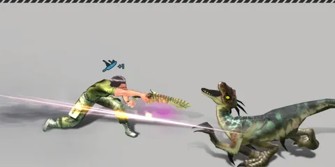

Home › Animals & Combat
 Combat Live
Combat Live
Fight animals bare handed, with melee weapons, bows or crossbows — damage depends on attack, the move you use, and armor penetration against the animal's defense · skill moves spend Stamina · bows shoot 6 tiles · training dummies · the catapult · character combat stats, auto-dodge and auto-block · fighting players on the Lawless Islands
Some sections on this page are not ready yet
Dinosaurs and wild animals are your food, your materials and your biggest danger. Combat on this server follows the original game's rules: every hit starts from weapon attack × the move's multiplier, then compares your armor penetration with the animal's defense. The colored area an animal draws on the ground while winding up is exactly where it will hit — step out in time and it misses.

What you can do
- Fight bare handed, with one-handed weapons (axe · knife/sword · blunt weapon), two-handed weapons, spears, bows and crossbows
- Use heavy hits, flurries and sweeping moves that hit several animals at once (these must be learned from the combat skill tree — see Skills)
- Stagger an animal so the attack it is winding up is cancelled; make it stunned / collapse to capture it (see Taming)
- Break body parts (head · body · legs · tail) to slow an animal down or weaken its attacks
- Use green weapon tags to make animals bleed (see Tags)
- Shoot bows and crossbows up to 6 tiles (the farther, the weaker) — see Bow and crossbow range
- Practice on the training dummies and the punch machine in the Safe House and see your real damage numbers at no cost
- Skill moves and the roll spend your Stamina bar — see Move stamina
- On the Lawless Islands (level 56+) you can fight other players — see Lawless Islands (PvP) · play last-one-standing matches on Brawl Island (level 50+) — see Brawl Island
How to fight Live
- Tap an animal to target it, then press Attack — your character walks into range and swings
- A weapon's basic attack is always available · special moves (heavy hit, flurry, stab, sweep, strike, aimed shot, quick shot) must be learned first
- Watch the colored area under the animal while it winds up — run out of it before the attack lands to dodge
- Animals you hit will turn and fight; some herbivores run away instead (see Wild animals) · if it can reach you it always strikes back, even when you stand in the safe zone around a Harbor or have lured it far from home — see When an animal is hit
- Standing on a water tile (even ankle-deep) you cannot attack — bows, crossbows, combat skills, every target including players · your pets don't attack or use attack skills while you stand in water either (riding a pet into the water counts as being in the water) · the roll still works · get back on land to fight
- You can hit an animal from somewhere it can't walk to (a small island, a sandbar cut off by water, a cliff), but it will lose interest and walk home, its health recovering at the normal rate — see When an animal is hit
Weapon types and moves Live
Numbers are the move's damage multiplier (1.0 = normal hit) · several numbers = several strikes
| Weapon | Normal hit | Special moves (multiplier) |
|---|---|---|
| Bare Handed (attack 40) | 1.0 | Kick 0.8 · heavy hit 1.3 · punch combo 0.6 ×3 |
| One-Handed (axe · knife/sword · hammer) | 1.0 | Heavy hit 2.2 · flurry 0.9 / 1.1 / 1.33 · stab 2.8 |
| Two-Handed | 1.0 | Heavy hit 2.2 · sweep 1.1 / 1.6 · strike 2.5 |
| Spear | 1.0 | Heavy thrust 2.2 · dash thrust 1.1 ×3 / 1.2 |
| Bow / Crossbow | 1.0 | Quick shot 1.0 / 1.0 / 1.22 · aimed shot 2.1 |
Damage formula Live
Damage = attack × move multiplier × penetration multiplier × direction multiplier × critical
- Attack = the attack of the weapon in your hand (bare hands 40) + your character's attack bonus (tags, built-in gear bonuses, food, titles, house ambiance and your stats — every 5 points of Strength above 10 = +1 attack) — the same number as on the character screen (Character stats)
- Penetration multiplier = 2.2 to the power of ((your armor penetration − animal defense) ÷ 100) · your armor penetration = the weapon's (bare hands 40) + your character's penetration bonus (every 5 points of Strength above 10 = +1)
- Difference 0 = ×1 · penetration ahead by 100 or more = ×2.2 (cap) · defense ahead by 100 or more = ×0.45 (floor)
- Animal defense grows with level (usually level × 5, e.g. Raptor Lv10 = 50) and is multiplied by the island's Unstable Index
- Hit chance = 50% + move accuracy × 45% (normal moves of bare hands, swords, axes, blunt weapons and spears = 95% · bow normal shot ≈ 84% · crossbow normal shot ≈ 86%) · heavy moves −4% · + 0.1% per point of your character's Accuracy above 100 · always between 35% and 99%
- Animal dodge — after your hit lands, the animal still has a chance to dodge = animal Evasion × 0.1% × 100 ÷ your Accuracy (max 40%) · most animals have Evasion = level × 5 · a dodge shows «Dodged», the animal loses no health, your weapon doesn't wear and you get no exp (same as a miss) · so Accuracy works two ways: your hit chance + cutting the target's dodge · animals with broken legs dodge less (Evasion −40) · training sandbags never dodge
| Animal | Accuracy 100 | Accuracy 150 | Accuracy 200 |
|---|---|---|---|
| Lv20 | 10% | 6.7% | 5% |
| Lv40 | 20% | 13.3% | 10% |
| Lv60 | 30% | 20% | 15% |
Accuracy below 100 (for example from the Heavy tag) lets animals dodge more — Accuracy 80 against a Lv40 animal = 25% · overall example: a Lv60 animal with Accuracy 100 and a normal move really gets hit ≈ 95% × 70% ≈ 66% of the time
- Critical hit chance 10% (heavy moves 18%) + 1% per Critical point (max 95%) · damage ×1.9
Examples (hit from the front, no critical · no character bonuses)
| Weapon | Move | Target | Damage per hit |
|---|---|---|---|
| Bare Handed | Normal | Compsognathus Lv1 | 42 |
| Bare Handed | Normal | Raptor Lv10 | 30 |
| Stone Axe Lv15 | Normal | Raptor Lv10 | 95 |
| Stone Axe Lv15 | Heavy hit | Raptor Lv10 | 209 |
| Bone Knife Lv15 | Stab | Sabertooth Lv40 | 94 |
| Bone Bow Lv30 | Normal shot | Raptor Lv10 | 163 |
Attack bonuses really count: a Lv30 two-handed stone axe (attack 154 · penetration 134) normal hit on a Lv30 Raptor (from the side) = 136 · with an «attack up» tag level 2 (+36 attack → 190) = 167 (+23%)
Defense Penetration Rate skills Live
Some skill lines give moves a chance for that hit to ignore the animal's defense completely (counted as if the animal had 0 defense — direction, critical and body parts still apply as normal) · skills covering the same move add up
| Skill | Moves affected | Per level (3 levels) |
|---|---|---|
| Backstab (penetration line) | One-handed stab | +10% |
| Sword specialization | One-/two-handed normal and special moves | +6% |
| Spear specialization | All spear moves | +6% |
| Bow specialization | All bow moves | +10% |
Bow and crossbow range Live
Bows and crossbows shoot up to 6 tiles with every shooting move, but the farther the target, the weaker the hit
| Distance from you to the target's edge | Damage |
|---|---|
| Up to 3.75 tiles | Full 100% |
| 3.75 → 6 tiles | Falls in a straight line down to 60% |
| Beyond 6 tiles | 60% |
- The aimed shot (bow and crossbow) does not fall off — full damage at any range · normal shots and quick shots follow the table
- Measured from you to the edge of the target's body at the moment the shot lands — big animals aren't penalized for being big
- Same for animals, players on the Lawless Islands (the ×0.35 for shooting players still multiplies on top) and training dummies · melee moves and accuracy are not affected
- If you tap a target farther than 6 tiles, your character walks up to the 6-tile edge and shoots there = 60% damage — walk closer yourself first if you want full damage
Arrows and stones you can see Not ready
With game version 3.1.5 or newer (PC and Android), shooting a bow, crossbow or sling shows the projectile flying from the shooter to the target — arrows that hit stay stuck in the target for about 5 seconds, then disappear · players around you see your arrows and you see theirs · damage, accuracy and range are unchanged, only the visuals are new
Move stamina Not ready
Combat moves spend Stamina (full bar 100 · refills by itself at about 5 per second — the Stamina-regeneration skills make it faster, see Character stats) · each move's cost is shown in its description · applies to every target: animals, players (PvP) and training dummies
- Basic attacks (a weapon's base move) always go out, even at zero Stamina — they take whatever is left
- Every skill move and the roll needs enough Stamina — if you don't have it the move doesn't fire, you see «Not enough Stamina», no cooldown is spent and nothing is deducted · wait for the bar to refill and press again
- Basic attacks in a row cost Stamina too: one-handed swings cost 5–6 in about 1 second, more than the refill, so the bar slowly drops · bows/crossbows drain faster (12 per 1.8 seconds) · two-handed basic attacks cost less than the refill (the bar doesn't drop)
- While you see «Exhausted — sit and rest» or «Too fatigued …», every move including basic attacks is unavailable until you rest
- The skills «Roll: Stamina I–III» and «Barrage: Stamina I–III» cut that move's cost by 6% per level
| Move | Stamina cost | Cooldown (seconds) |
|---|---|---|
| Basic attack: one-handed · two-handed · spear | 5–6 · 8–9 · 7 | — |
| Basic attack: bow · crossbow · bare hands | 12 · 12 · 0 | — |
| Roll | 35 | 7 |
| One-handed: heavy hit · flurry · stab | 25–27 · 31–33 · 30–32 | 8.4–9.2 · 23.5–25.7 · 11.8–12.9 |
| Two-handed: heavy hit · sweep · strike | 31–35 · 50–59 · 35–39 | 12.6–13.5 · 32.2–35.8 · 16.4–18.3 |
| Spear: heavy thrust · dash thrust | 37 · 50 | 12.8 · 32.2 |
| Bare hands: kick · heavy hit · punch combo | 20 · 30 · 40 | 6 · 8 · 12 |
| Bow/crossbow: quick shot · aimed shot | 34 · 52 | 14.7 · 49.5 |
Example: from a full 100 bar, a one-handed sword heavy hit 25 + flurry 31 + stab 30 = 86 → 14 left, not enough for a roll (35) · axes and blunt weapons cost slightly different Stamina/cooldown from swords — the ranges in the table cover all three
Stagger gauge Live
Every hit adds "blow power" to the animal's gauge. When the gauge reaches the species' stagger resistance, the animal staggers and the attack it is winding up is cancelled, then the gauge starts over · if it isn't hit for 4 seconds, the gauge resets
| Blow power per hit | Value |
|---|---|
| Bow · bare hand · one-handed · crossbow (normal hit) | 60 · 80 · 90 · 100 |
| Two-handed (normal hit) · heavy hit · stab | 120 · 150 · 180 |
| Two-handed strike / second sweep swing | 240 |
| Animal | Resistance | One-handed normal hits needed |
|---|---|---|
| Compsognathus · Phenacodus | 140 | 2 |
| Raptor | 420 | 5 |
| Sabertooth · Direwolf | 560 | 7 |
| Mammoth | 1,120 | 13 |
| Tyrannosaurus | 1,575 | 18 |
Hit shapes and areas Live
- Every move has its own hit area (circle · cone · rectangle) and the server checks each hit against it
- Area moves (flurry · sweep · stab · strike · punch combo) can hit several animals at once, up to 6 per swing · only animals on the island you're standing on · on a Lawless Island they hit enemy players too (6 targets in total)
- Animal attacks are cones/rectangles taken from their real moves (e.g. a raptor's tail swipe hits behind it) · the yellow/red area on screen = where the hit really lands
Hit direction and body parts Live
- Direction: most animals take ×0.8 from the front · ×1.0 from the sides · ×1.2 from behind (Tyrannosaurus is reversed: front ×1.2 · back ×0.8) · you also take ×1.2 when an animal hits you from behind
- Body parts: each hit lands on the head/body/legs/tail at random depending on the direction. Each part has its own health; when it breaks:
- Broken legs → the animal walks/runs at 60% speed and is easier to hit
- Broken head or tail → the animal hits weaker or misses more often
- Broken parts heal by themselves after 10 minutes · when butchering, items from broken parts come out halved (except meat)
- Axe mastery skills add +6% body-part damage per level
Status effects on animals Live
Some green tags on weapons/gear make animals bleed (health drains over time — if it dies you get a normal carcass) or make animals that hit you miss more often · bleeding does not stagger or stun · see Tags for the tag list
When animals hit you Live
Animals use the same formula: animal attack × 2.2 to the power of ((animal penetration − your defense) ÷ 100) · your defense = the defense of every armor piece + defense bonuses from skills/tags/gear/food/titles (the same value as on the character screen) · armor reduces damage but never blocks it completely; high-level animals hit very hard
| Animal | Your defense | Damage taken |
|---|---|---|
| Raptor Lv10 | 0 | 35 |
| Raptor Lv10 | 50 | 24 |
| Sabertooth Lv40 | 100 | 176 |
| Mammoth Lv50 | 150 | 466 |
| Tyrannosaurus Lv60 | 300 | 952 |
After the damage is worked out there is still a chance to auto-dodge (no damage at all) and to auto-block (less damage) — dodge is rolled first, block only if you didn't dodge
A hit that really lands (no dodge, no block) also has a 5% chance to knock your character down for a moment (about 2 seconds) — gear with the «Knockdown Resistance Buff» property lowers this by 1% per tag level (down to 0%), while properties that lower knockdown resistance raise it by 1% per level (Item properties) · animals only — players hitting each other don't knock down
How much defense and blocking help Live
A Lv30 character wearing armor with 122.5 total defense, holding a Lv30 two-handed stone axe (attack 154) · damage per hit (from the side, no critical)
| Animal | Armor only | + all Defense skills (+100 → 222.5) | Armor + block | All skills + block |
|---|---|---|---|---|
| Raptor Lv30 | 54 | 25 | 8 | 1 |
| Sabertooth Lv40 | 176 | 92 | 130 | 46 |
| Mammoth Lv50 | 466 | 391 | 420 | 345 |
- A block removes weapon attack × 0.3 = 154 × 0.3 ≈ 46 per blocked hit · at least 1 damage remains
- All Defense skills + all max-Health skills (Health 472 → 722): a Lv30 Raptor needs 9 → 29 hits to kill you · a Lv40 Sabertooth 3 → 8 · a Lv50 Mammoth still 2
Animal moods you can see Live
An animal that has picked you shows its mood: an icon over its head (about to chase / fighting / running away), it turns to look at its target, and its body color shifts towards red with each level
| Level | When | Message on screen |
|---|---|---|
| Calm | No target | — |
| Excited | Has spotted you and is about to chase | «… is excited» |
| Attacking | Chasing you (you haven't hit it) | «… is attacking» |
| Angry | You hit it within the last 20 seconds | «… is angry» |
| Furious | Angry and health at 50% or less | «… is furious» |
| Final stand | Has a target and health at 20% or less | «… is making a final stand» |
- The message appears only for the player the animal has picked, when the level goes up or it switches to a new target (not repeated within 15 seconds) · the color change is seen by everyone looking at that animal
- It is only a warning signal — the animal's strength and behavior are unchanged
Auto-dodge Live
Every time an animal lands a hit, you have an auto-dodge chance = Evasion × 0.1% × 100 ÷ the attacker's Accuracy (max 40%) — on a dodge you see «Dodged», lose no health, your character staggers aside briefly in the hit direction (animal hits and PvP), and the Defense category gets the same exp as dodging with a roll
| Evasion | Dodge chance (attacker Accuracy 100 · animal up to Lv20) |
|---|---|
| 0 (default) | 0% |
| 30 | 3% |
| 150 | 15% |
| 400 or more | 40% (cap) |
- Animal Accuracy is mostly level × 5 (multiplied by the island Index) but never counts below 100 — animals up to Lv20 never make you dodge more than the table · a Lv40 animal (Accuracy 200) halves your dodge · Lv60 leaves a third — e.g. Evasion 115: Lv20 = 11.5% · Lv40 = 5.8% · Lv60 = 3.8%
- PvP uses the attacker's Accuracy (no minimum) — an attacker with Accuracy 150 against Evasion 115 = 7.7% · an attacker below 100 Accuracy lets the target dodge more
- Evasion comes from some gear (e.g. the improved melee combat outfit), tags, titles, food or your Agility stat (every 5 points above 10 = +1) — no skill level gives Evasion yet
- Works with every weapon, bare hands included
Auto-block Live
Hold a melee weapon (sword/knife · axe · blunt weapon · spear) that still has Durability, and when an animal hits you (and you didn't auto-dodge) you have a chance to block and take less damage — no button, nothing to press
- Block chance = 5% + 0.25% × Defense category level (max 20% — exactly at category Lv60)
- Damage removed = the attack of the weapon you hold × 0.3 (your character's attack bonus is not included) · at least 1 damage remains
- On screen it shows as the reduced damage number like a normal hit (no «blocked» text)
- The blocked part wears your weapon by half of the amount blocked (like when you hit) · armor only wears from the remaining damage
- A blocked hit gives Defense exp equal to a roll dodge, instead of the exp for taking a hit
- Bare hands, bows, crossbows = can't block · blocking doesn't stagger the animal or counter-attack
| Defense category level | Block chance |
|---|---|
| 1 | 5.25% |
| 30 | 12.5% |
| 60 | 20% |
Stunned and collapsed Live
Hitting an animal repeatedly drains its stun gauge until it freezes (stunned) or collapses with stars over its head. It can't attack during that time and can be captured — see Taming
Training dummies and the punch machine Live
The Safe House has 4 kinds of training dummy — Target · Scarecrow · Training Set · Punching Bag — and a Punch Machine, so you can try weapons and moves before heading out to hunt
- Tap a dummy and choose Attack! to enter combat mode and target it, then hit it with your normal moves — the damage number pops up on the dummy (people watching see the same number)
- Damage = your raw damage with the same formula as hitting animals (weapon, stats, skills, move, tags), but a dummy has no armor, never dodges and never makes you miss · critical hits and heavy moves work as usual
- Hitting a dummy gives no exp · your weapon doesn't wear · the dummy never breaks, dies or drops anything · it doesn't put you in the combat state
- Area moves aimed at an animal don't sweep dummies, and hits on a dummy don't sweep animals
- The Punch Machine costs 100 T Stone per try — the number it shows and ranks is the real damage with the same formula as above (the old ranking, which used the previous formula, has been cleared)
Catapult Not ready
The catapult you can climb onto now really fires at enemies:
- Load it — tap the catapult, choose «Load Projectile» and pick big items tagged «big chunk» (for example Stone Chunk, Marble, Obsidian, Granite, Basalt, Large Skull) — 1 item = 1 shot, up to 400 shots (shown as «Projectile n/400») · you need the right to deposit items at that catapult
- Fire — sit in it and aim at a spot 3–7.5 tiles away · a warning circle appears on the ground about 2 seconds before the shot lands · at most one shot every 5 seconds, and it can't fire when it is empty
- Impact — hits every target within about 2.25 tiles of the impact point (up to 20 targets, nearest first)
| Hits | Result |
|---|---|
| Wild animals | 130 + 0.8 × the catapult's level damage (penetration 200 + level) · no critical · your own weapon and skills are not used |
| Players on the Lawless Islands | Normal PvP rules (party, clan, allied clans and players still under their arrival shield aren't hit) · damage uses the PvP penetration table × 0.15, then halved = ×0.075 |
| Whoever sits in the catapult inside the circle | Takes 60% |
| Structures | Not damaged yet |
Player vs player (PvP) Not ready
You can hit players only on the Lawless Islands (open from level 56) and in Brawl Island matches (level 50+ — Brawl Island) — on every other island your only enemies are animals
- Same moves as against animals, but the damage formula against players is a PvP set of its own: gradual defense curve · 4% base critical chance · skill-category bonuses don't apply · kind-of-move multiplier ×0.8 (melee, area moves included) / ×0.35 (bow, crossbow — long shots also fall off with range), then halved again ×0.5 — all numbers at Damage in PvP · the target can still roll, auto-dodge and auto-block as usual
- Party members, clanmates and allied clans can't hit each other · players are never stunned by players · no exp for hitting players
- Everything else (arrival shield · what drops when you die) is on Lawless Islands (PvP)
Not on this server yet Not ready
Weapon accuracy / knockback Not ready
The accuracy value on weapons themselves is not used for hit chance yet (hit chance comes from the move + your character's Accuracy · animal evasion is now used — see Animal dodge) · knockback moves have no push effect · there is no manual guard move (only auto-block)